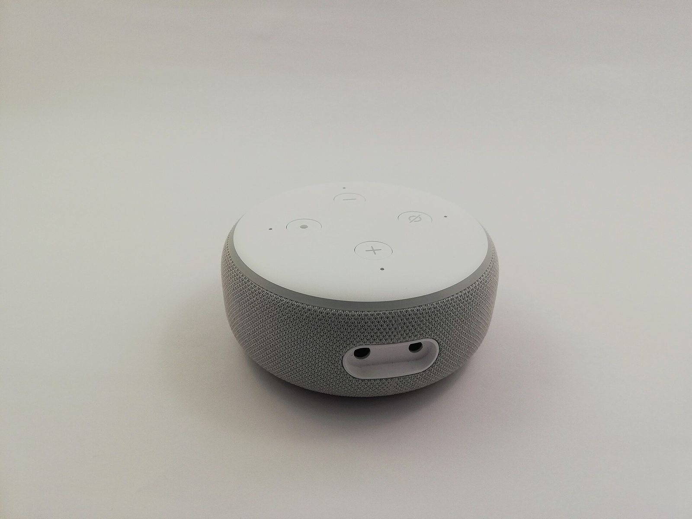

Умный дом с нуля: с чего начать в 2026 году

Умный дом не обязательно собирать за один день и за большие деньги. Вот порядок, в котором это имеет смысл делать.
Шаг 1. Освещение
Начинайте с ламп и выключателей — это самый заметный и дешёвый эффект:
- Лампы с Wi-Fi работают без хаба, но при выключении света с выключателя «отваливаются».
- Реле (Sonoff, Aqara) врезаются в выключатель — светом управляет и кнопка, и приложение.
Шаг 2. Датчики
- Датчики открытия на окна/двери.
- Датчики движения в коридор и санузел — свет включается сам.
- Датчик протечки под стиралку и в санузел — экономит от потопа.
Шаг 3. Хаб или без хаба
- Без хаба — всё на Wi-Fi, проще, но при 10+ устройствах роутер начинает тормозить.
- С хабом (Zigbee) — устройства живут дольше от батареек, сеть стабильнее. Aqara и Яндекс — хорошие варианты.
Шаг 4. Голосовой помощник
Яндекс.Станция или Алиса в приложении — связывает всё в сценарии: «ухожу из дома» выключает свет и включает охрану.
Вывод
Порядок такой: свет → датчики → хаб → сценарии. Начните с двух ламп и датчика движения — уже через вечер поймёте, нужно ли вам больше.
Не покупайте сразу стартовый набор из 20 устройств: половина окажется лишней. Собирайте под задачи.
Проверьте актуальные цены
Ссылки на маркетплейсы и сервисы ведут на проверенные предложения, для вас цена не меняется.
Найти на Маркете →